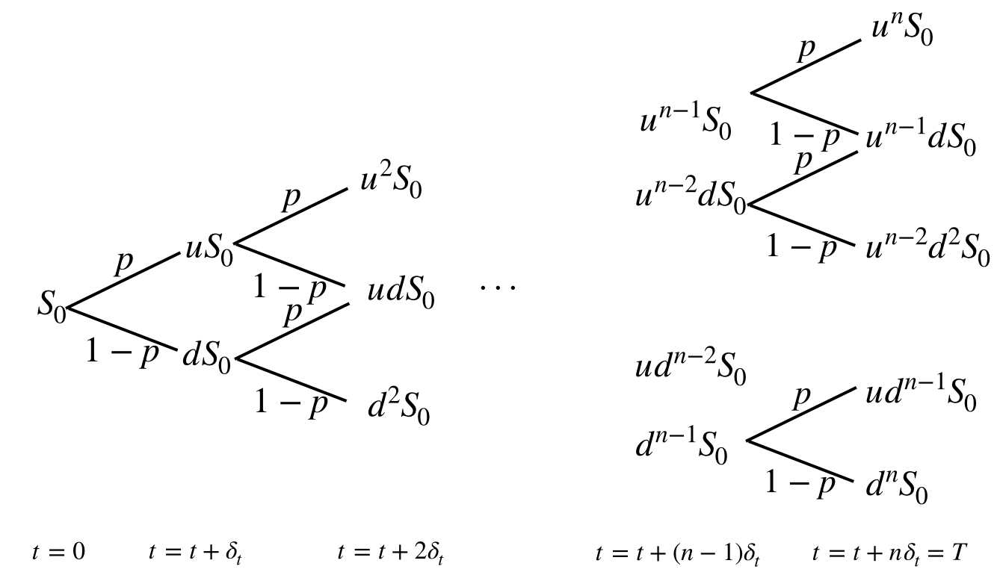

Tutorial 1: Vanilla European Option Price Calculator (Binomial Model)
This simple web calculator calculates the European call/put option prices for an asset that pays no dividends. Click here to view/hide tutorial.
Let \( S_t \) be the price of the asset at time \(t\). We use a discrete time model with \(n\) steps to approximate the evolution of asset price over the time interval \([0,T]\). The binomial model assumes that in one time period (after one time step with size \(\delta_t\)), the asset price will go from the current price \(S\) to either \(uS \) with probability \(p\) or to \(dS\) with probability \(1-p\), where \(p\) is the risk neutral probability. The Cox-Ross-Rubinstein model assumes that \(u = \exp(\sigma\sqrt{\delta_t})\), \(d = \exp(-\sigma\sqrt{\delta_t})\), \(p = \frac{R-d}{u-d}\), where \(\sigma\) is the volatility of the asset and \(R = \exp(r\delta_t)\). The asset price tree after \(n\) periods look like this:

Let \(K \) be the strike price of the option. We know that at expiration, the price of an European call option is \( \max(S_T-K,0)\). Recall that the one-period risk neutral European call option price (as a function of the asset price \(S\) and time \(t\)) is given by \[C(t,S) =\frac{1}{R} \bigg[ p C(t+\delta_t, uS) + (1-p)C(t+\delta_t,dS) \bigg].\] We first calculate the option price at expiration for the \(n+1\) possible price values (see the asset price tree at \(t = T\)), and iteratively calculate the option price at the previous time step using the one-period pricing formula until we reach the current time 0. That is, the call option price at time \(T = n\delta_t\) (as a function of the asset price) is: \[C^n_0 = \max(u^nS_0-K,0)\] \[C^n_1 = \max(u^{n-1}dS_0-K,0)\] \[...\] \[C^n_{n-1} = \max(ud^{n-1}S_0-K,0)\] \[C^n_n = \max(d^nS_0-K,0)\] Going back ont step, at time \(t = T-\delta_t = (n-1)\delta_t\), the call option price (as a function of the asset price) is: \[C^{n-1}_0 =\frac{1}{R} \bigg[ p C^n_0 + (1-p)C^n_1 \bigg]\] \[C^{n-1}_1 =\frac{1}{R} \bigg[ p C^n_1 + (1-p)C^n_2 \bigg]\] \[...\] \[C^{n-1}_{n-1} =\frac{1}{R} \bigg[ p C^n_{n-1} + (1-p)C^n_n \bigg]\] And so on. Every time we go back one step, the number of possible call option prices reduce by one. As we reach time \(t=0\), the value \(C^0_0\) is the price of the European call option. The European put option price can be easily calculated using put-call pairity: \[P = C -S + K \exp(-r(T-0)).\]
Let \(K \) be the strike price of the option. We know that at expiration, the price of an European call option is \( \max(S_T-K,0)\). Recall that the one-period risk neutral European call option price (as a function of the asset price \(S\) and time \(t\)) is given by \[C(t,S) =\frac{1}{R} \bigg[ p C(t+\delta_t, uS) + (1-p)C(t+\delta_t,dS) \bigg].\] We first calculate the option price at expiration for the \(n+1\) possible price values (see the asset price tree at \(t = T\)), and iteratively calculate the option price at the previous time step using the one-period pricing formula until we reach the current time 0. That is, the call option price at time \(T = n\delta_t\) (as a function of the asset price) is: \[C^n_0 = \max(u^nS_0-K,0)\] \[C^n_1 = \max(u^{n-1}dS_0-K,0)\] \[...\] \[C^n_{n-1} = \max(ud^{n-1}S_0-K,0)\] \[C^n_n = \max(d^nS_0-K,0)\] Going back ont step, at time \(t = T-\delta_t = (n-1)\delta_t\), the call option price (as a function of the asset price) is: \[C^{n-1}_0 =\frac{1}{R} \bigg[ p C^n_0 + (1-p)C^n_1 \bigg]\] \[C^{n-1}_1 =\frac{1}{R} \bigg[ p C^n_1 + (1-p)C^n_2 \bigg]\] \[...\] \[C^{n-1}_{n-1} =\frac{1}{R} \bigg[ p C^n_{n-1} + (1-p)C^n_n \bigg]\] And so on. Every time we go back one step, the number of possible call option prices reduce by one. As we reach time \(t=0\), the value \(C^0_0\) is the price of the European call option. The European put option price can be easily calculated using put-call pairity: \[P = C -S + K \exp(-r(T-0)).\]
struct option {
double call;
double put;
};
option optionPrice
(
double S, // stock price
double K, // strike price
double r, // riskless interest rate
double t, // current time
double T, // expiration time
double sig, // volatility
int n // number of steps
)
{
option result;
// calculate step size
double dt = (T-t)/n;
// use CRR model for u, d, p
double u = exp(sig*sqrt(dt));
double d = 1/u;
double R = exp(r*dt);
double p = (R-d)/(u-d);
// allocate (n+1) nodes for option values
double * V = new double [n+1];
// calculate the option prices at time T
for (int j = 0; j < n+1; j++){
V[j] = max(S*pow(u,j)*pow(d,n-j) - K, 0.);
}
// iteratively calculate the option price at the previous time step until time is t
// using one period pricing formula
for (int i = n-1; i >= 0; i--){
for (int j = 0; j<= i; j++){
V[j] = (1/R)*(p*V[j+1] + (1-p)*V[j]);
}
}
// set value for call price
result.call = V[0];
// calculate put price from put-call parity
// P = C - S + K*exp(-r(T-t))
result.put = result.call - S + K*exp(-r*(T-t));
delete [] V;
return result;
};Tutorial 2: TBD